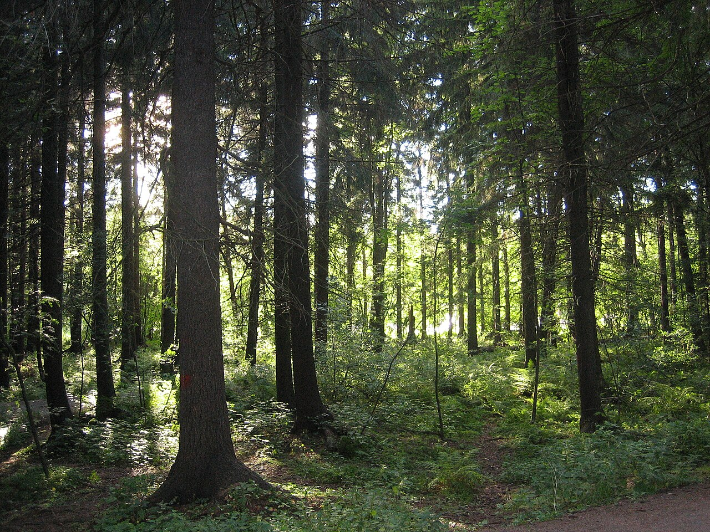

Vēris ir egļu mežs, kas izplatīts mālainās, auglīgās velēnu podzolaugsnēs. Egļu audzē var būt neliels bērzu, apšu, baltalkšņu un citu lapkoku piejaukums. Pamežs ir rets, jo augiem trūkst gaismas – tajā aug pīlādži, krūkļi un lazdas. Zemsedzi veido ēnmīļi augi – zaķskābenes, zemenes, papardes un dažādas sūnas.

Avots: lv.wikipedia.org